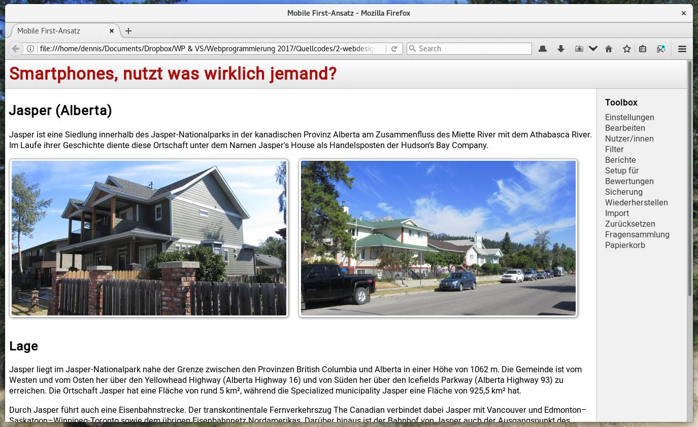
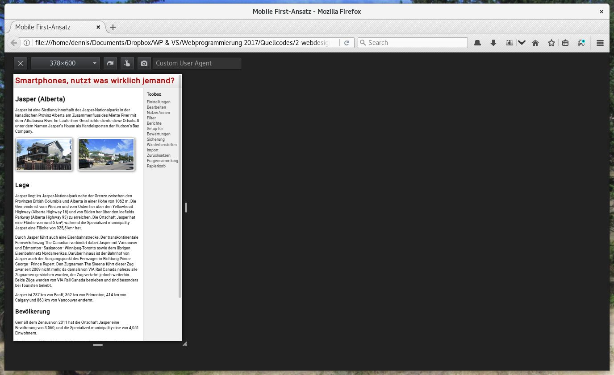
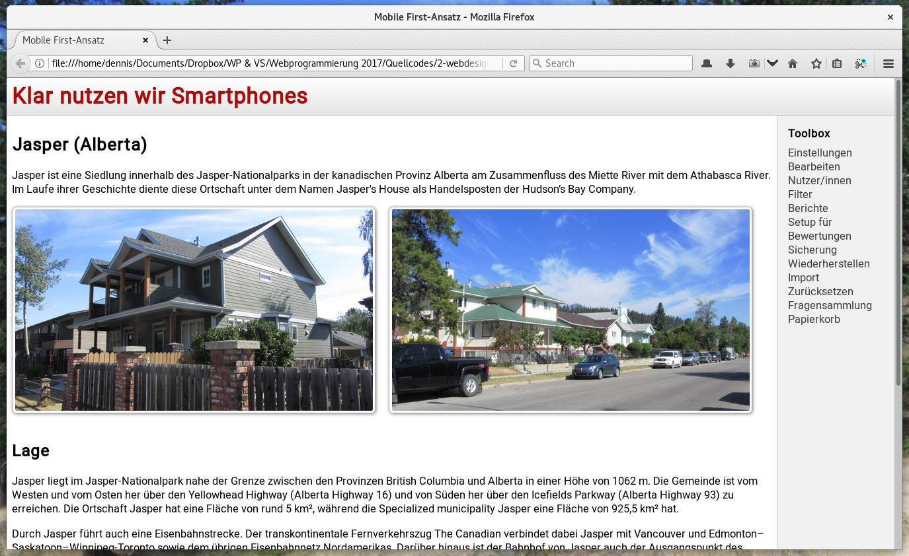
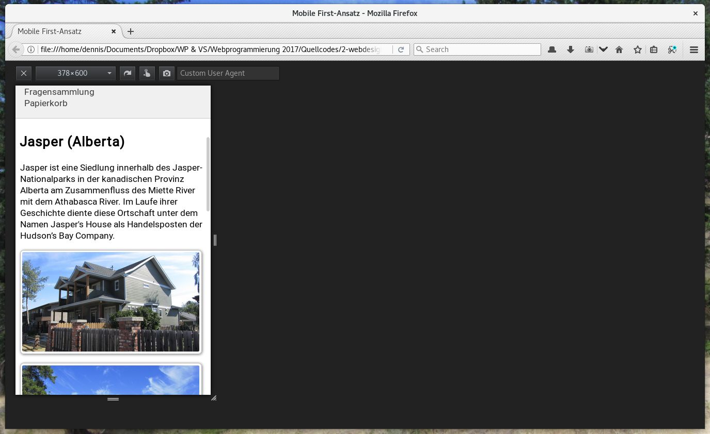

Wenn du wirklich moderne Webseiten und Webanwendungen gestalten willst,
musst du deine Seiten so gestalten, dass sie auf allen nur denkbaren
Geräten gut aussehen. Hier erfährst du wie.


<!DOCTYPE html>
<html>
<head>
<meta charset="utf-8" />
<link rel="stylesheet" href="style.css" />
</head>
<body>
<header>
<h1>Smartphones, nutzt das wirklich jemand?</h1>
</header>
<section>
<!-- Hauptbereich mit Inhalt -->
<main>
<h1>Jasper (Alberta)</h1>
<p>
Jasper ist eine Siedlung innerhalb des Jasper-Nationalparks …
</p>
<img src="jasper1.jpg" alt="Typisches Haus in Jasper"/>
<img src="jasper2.jpg" alt="Typische Straße in Jasper"/>
<h2>Lage</h2>
<p>
Jasper liegt im Jasper-Nationalpark nahe der Grenze …
</p>
…
</main>
<!-- Side Bar mit Navigation -->
<nav>
<h2>Toolbox</h2>
<ul>
<li> <a>Einstellungen</a> </li>
<li> <a>Bearbeiten</a> </li>
<li> <a>Nutzer/innen</a> </li>
…
</ul>
</nav>
</section>
</body>
</html>
/** Allgemeines **/
html {
font-family: sans-serif;
font-size: 2.3vmin;
}
/** Hauptbereich **/
section {
display: flex;
}
section main {
padding: 0.5rem;
}
section img {
display: inline-block;
max-width: calc(50% - 2em);
margin: 0 1em 1em 0;
background: white;
border: …
}
Dieselbe Seite ein wenig anders


<!DOCTYPE html>
<html>
<head>
<meta charset="utf-8" />
<link rel="stylesheet" href="style.css" />
</head>
<body>
<header>
<h1>Klar nutzen wir Smartphones </h1>
</header>
<section>
<!-- Side Bar mit Navigation -->
<!-- Steht jetzt vor dem Hauptbereich -->
<nav>
<h2>Toolbox</h2>
<ul>
<li> <a>Einstellungen</a> </li>
<li> <a>Bearbeiten</a> </li>
<li> <a>Nutzer/innen</a> </li>
…
</ul>
</nav>
<!-- Hauptbereich mit Inhalt -->
<main>
…
</main>
</section>
</body>
</html>
/** Allgemeines und Smartphone **/
html {
font-family: sans-serif;
font-size: 10pt;
}
section main {
padding: 0.5rem;
}
section img {
max-width: calc(100% - 1rem);
display: block;
margin-bottom: 1em;
background: white;
border: …
}
/** Große Bildschirme **/
@media (min-width: 40em) {
html {
font-size: 2.3vmin;
}
section {
display: flex;
}
section img {
display: inline-block;
max-width: calc(50% - 2em);
margin: 0 1em 1em 0;
}
}
Vorgehen bei der Entwicklung
Das Video zeigt, wie eine einfache Webanwendung nach dem Mobile-First-Prinzip entwickelt
wird. Dabei entsteht zunächst die Smartphone-Ansicht, die anschließend in wenigen Schritten
zur Desktop-Ansicht ausgebaut wird.
Mehr über Media Queries
Media Queries ermöglichen es, einfache Fallunterscheidungen in einem Stylesheet vorzunehmen,
indem die Eigenschaften des Ausgabegeräts abgefragt werden. Somit lassen sich Layoutregeln
speziell für Smartphones oder die Druckausgabe erzeugen.
Alle Ausgabemedien mit einer Mindestbreite von 800 Pixeln.
(min-width: 800px)
Dasselbe wie oben. Wenn alle Medien gemeint sind, kann das all fehlen.
print
Ausgabe auf dem Drucker. Hier bitte alle überflüssigen Elemente entfernen.
(orientation: landscape), (min-width: 1024px)
ODER-Verknüpfung mehrerer Prüfungen.
screen (max-width: 600px) and screen (orientation: landscape)
UND-Verknüpfung mehrerer Prüfungen.
Responsive Breakpoints
Gute Grenzwerte zur Prüfung der Bildschirmgröße zu finden, ist nicht leicht.
Die folgenden Werte, welche die Bootstrap-Entwickler durch umfangreiche Tests
ermittelt haben, bieten einen guten Anhaltspunkt.
(max-width: 768px)
Kleine Geräte und Smartphones
(min-width: 768px)
Mittlere Geräte und Tablets
(min-width: 992px)
Sehr große Tablets oder kleine Computerbildschirme
Schaltet für ein Element den Flexbox-Algorithmus ein, wenn der Bildschirm
mindestens 800px breit ist.
@media (orientation: landscape) {
html {
background-image: url(landscape.jpg);
}
}
Setzt ein spezielles Hintergrundbild, wenn die Webseite im Querformat angezeigt wird.
Aufgabe 1: Ein kleines Webdesign-Quiz
Die schnelle Entwicklung komplexer Webseiten und AnwendungenDie Entwicklung mehrsprachiger Webseiten und AnwendungenDie Entwicklung geräteneutraler Webseiten und AnwendungenDie besonders ansprechende Gestaltung von Webseiten und AnwendungenResponsive StyleSmall to LargeMobile and DesktopMobile FirstLeichtere Anpassung des Layouts an große und kleine BildschirmeAusschließlich für die mobile Nutzung optimierte SeitenWeitgehend identische Funktionalität auf allen EndgerätenVergleichbares Aussehen wie native Apps gängiger BetriebssystemeEingeschränkte Kompatibilität mit unterschiedlichen BrowsernDie mobile Darstellung bestimmt in weiten Teilen auch die Desktop-DarstellungAuch auf mobilen Endgeräten wird der Code für die Dekstop-Version geladenProgressive Web Apps lassen sich dadurch nur schwer realisierenEine Fallunterscheidung zur Abfrage von Eigenschaften des AusgabegerätsEin spezielles Stylehsset für die Anpassung an mobile EndgeräteEine Abfragesprache für unterschiedliche Multimedia-InhalteEine HTML-Anweisung zur Nutzung geräteabhängiger Medieninhalte
<header>
<media query="screen (min-height: 768px)">
<img src="desktop-banner.jpg" />
</media>
</header>
<head>
<link rel="stylesheet" href="all-devices.css" />
<link rel="stylesheet" media="screen (max-width: 767px)" href="phone.css" />
</head>
main {
background-color: white;
padding: 1em;
}
@media (min-width: 992px) {
main {
display: flex;
flex-direction: column;
justify-content: center;
align-items: stretch;
}
}
main {
background-color: white;
padding: 1em;
@media min-width = 992px {
display: flex;
flex-direction: column;
justify-content: center;
align-items: stretch;
}
}
a) Was bewirken die folgenden CSS-Anweisungen?
body {
font-size: 11pt;
}
@media (max-width: 30em) {
body {
font-size: 9pt;
}
}
Auf Bildschirmen im Querformat wird eine größere Schriftart verwendetAuf kleinen Bildschirmen wird eine etwas kleinere Schriftart verwendetAuf großen Bildschirmen wird eine etwas kleinere Schriftart verwendet
b) Was bewirken die folgenden CSS-Anweisungen?
@media all and (orientation: landscape) {
main {
background-image: url(landscape.jpg);
}
}
@media all and (orientation: portrait) {
main {
background-image: url(portrait.jpg);
}
}
Geräte im Hochformat verwenden ein anderes Hintergrundbild als im QuerformatÜber ein Menü kann zwischen einem Landschafts- und einem Porträtbild ausgewählt werdenFalls die Seite ausgedruckt wird, werden alle Hintergrundbilder deaktiviert
c) Was bewirken die folgenden CSS-Anweisungen?
@media print {
nav, aside, footer {
display: none;
}
main {
color: black;
background: none;
}
}
Auf kleinen Bildschirmen werden überflüssige Elemente nicht angezeigtAusdrucke in DIN A5 oder kleiner beinhalten weniger Elemente als größere FormateEin Ausdruck der Seite beinhaltet nur den Hauptbereich ohne sonstige Elemente
Aufgabe 2: Mein erster Media Query
Passe die folgende HTML-Seite gemäß der Beschreibung so an, dass sie sowohl
auf Smartphones als auch größeren Bildschirmen lesbar ist.
<!DOCTYPE html>
<html>
<head>
<meta charset="utf-8" />
<title>🎁 Mein erster Media Query</title>
<style>
html {
font-family: sans-serif;
font-size: 12pt;
/* https://pixabay.com/photos/gifts-packages-made-loop-570821/ */
background-image: url(hintergrund.jpg);
background-repeat: no-repeat;
background-position: center center;
background-size: cover;
}
h1 {
color: crimson;
text-shadow: 0px 0px 1px rgba(0,0,0, 0.5),
0px 1px 1px rgba(0,0,0, 0.5),
1px 0px 1px rgba(0,0,0, 0.5),
1px 1px 1px rgba(0,0,0, 0.5);
}
main {
text-align: center;
}
</style>
</head>
<body>
<main>
<h1>Das Gedicht vom Älter werden</h1>
<p>
Das große Glück, noch klein zu sein, <br />
Sieht mancher Mensch als Kind nicht ein. <br />
Und möchte, dass er ungefähr <br />
So 16 oder 17 wär'.
</p>
<p>
Doch schon mit 18 denkt er: „Halt! <br />
Wer über 20 ist, ist alt.” <br />
Warum? Die 20 sind vergnüglich – <br />
Auch sind die 30 noch vorzüglich.
</p>
<p>
Zwar in den 40, welche Wende, <br />
Da gilt die 50 fast als Ende. <br />
Doch in den 50, peu à peu, <br />
Schraubt man das Ende in die Höh'!
</p>
<p>
Die 60 scheinen noch passabel <br />
Und erst die 70 miserabel. <br />
Mit 70 aber hofft man still: <br />
„Ich schaff' die 80, so Gott will.”
</p>
<p>
Wer dann die 80 biblisch überlebt, <br />
Zielsicher auf die 90 strebt. <br />
Dort angelangt, sucht er geschwind <br />
Nach Freunden, die noch älter sind.
</p>
<p>
Doch hat die Mitte 90 man erreicht <br />
– Die Jahre, wo einen nichts mehr wundert –, <br />
Denkt man mituntner: „Na, vielleicht <br />
Schaffst du mit Gottes Hilfe auch die 100.”
</p>
</main>
</body>
</html>
Auf dem Smartphone
Auf dem Smarthpone soll einfach nur das Gedicht angezeigt werden.
Der Text soll über die gesamte Bildschirmbreite zentriert werden.
Es soll kein Hintergrundbild angezeigt werden.
Für Bildschirme ab 50em
Das in der HTML-Datei vordefinierte Hintergrundbild soll sichtbar sein.
Das HTML-Element mit dem Text des Gedichts soll exakt 40em breit sein.
Innerhalb des Elements soll 1em Abstand zum Text bleiben.
Das Element soll einen weißen Hintergrund und einen dezenten Rahmen besitzen.
Das Gedicht soll mit Hilfe des Flexbox-Algorithmus mittig auf dem Bildschirm platziert werden.
Nicht alle Antworten stehen in den Folien. Manche Dinge musst du recherchieren.
Eine bekannte Webseite zur Dokumentation gängiger WebstandardsEin HTML-Vorlageprojekt, das als Grundlage für eigene Projekte dientEin clientseitiges Webframework zur einfacheren Umsetzung gängiger UI-PatternsEine weit verbreitete Bibliothek zusätzlicher HTML-Elemente, so genannter Web ComponentsEin Präprozessor, welcher die Syntax von HTML und CSS um weitere Anweisungen ergänztApache 2.0BSD 2-clauseBSD 3-clauseCC-BY-ND 4.0GPL 2.0GPL 3.0LGPL 2.1MITZlib LicenseIn Projekten jedweder Art, solange der Lizenztext von Bootstrap beigelegt wirdAusschließlich in Projekten, die unter derselben Lizenz wie Bootstrap stehenKostenlos in Projekten mit freier Lizenz, kostenpflichtig in kommerziellen ProjektenIn nicht-öffentlichen Testprojekten kostenlos, in öffentlichen Projekten gegen GebührEine Sammlung häufig benötigter Icons im SVG-FormatEine Sammlung von Beispiel-Quellcodes für unterschiedliche WebseitenVordefinierte CSS-Klassen für häufig benötigte Layout-AnweisungenEin CSS-Grid zur Gestaltung sich ans Endgerät anpassender LayoutsVordefinierte UI-Komponenten wie Karten, Karussells, Navigationsmenüs, …Anpassung des Frameworks durch Überschreiben von Theme-ParameternWahrFalschWahrFalschWahrFalsch
<div class="container">
<div class="row">
<div class="col-md-8">...</div>
<div class="col">...</div>
</div>
<div class="row">
<div class="col">...</div>
<div class="col-md-8">...</div>
</div>
</div>
<div class="grid-container">
<div class="grid-row">
<div class="grid-col-md-8">...</div>
<div class="grid-col-md-4">...</div>
</div>
<div class="grid-row">
<div class="grid-col-md-4">...</div>
<div class="grid-col-md-8">...</div>
</div>
</div>
<div class="container">...</div>
<div class="container-fluid">...</div>
<div class="grid-container">...</div>
<div class="grid-fluid">...</div>
<div class="container">...</div>
<div class="container-fluid">...</div>
<div class="grid-container">...</div>
<div class="grid-fluid">...</div>
<div class="row">
<div class="col-md-3">...</div>
<div class="col-md-6">...</div>
<div class="col-md-3">...</div>
</div>
<div class="row">
<div class="col-sm-3">...</div>
<div class="col-sm-6">...</div>
<div class="col-sm-3">...</div>
</div>
a) Welche Beschreibung passt am Besten zu folgendem Quellcode?
<div class="container">
<div class="row">
<div class="col-md-4">…</div>
<div class="col-md-8">…</div>
</div>
<div class="row">
<div class="col-md-12">…</div>
</div>
</div>
Auf mittelgroßen Bildschirmen werden zwei Zeilen mit jeweils zwei Elementen
nebeneinander angezeigt. Auf kleineren Bildschirmen steht alles untereinander.
Auf allen Bildschirmen werden zwei unterschiedliche große Elemente in der
ersten Zeile und ein großes Element in der zweiten Zeile dargestellt.
Auf mittelgroßen Bildschirmen stehen zwei unterschiedlich große Elemente
in der ersten Zeile und ein großes Element in der zweiten Zeile. Auf kleineren
Bildschirmen steht alles untereinander.
b) Welche Beschreibung passt am Besten zu folgendem Quellcode?
<div class="container">
<div class="row">
<div class="col-lg-4">…</div>
<div class="col-lg-4">…</div>
<div class="col-lg-4">…</div>
</div>
<div class="row">
<div class="col-lg-2">…</div>
<div class="col-lg-4">…</div>
<div class="col-lg-3">…</div>
<div class="col-lg-3">…</div>
</div>
</div>
Auf großen Bildschirmen werden zwei Zeilen mit jeweils drei oder vier
Elementen nebeneinander angezeigt. Auf kleineren Bildschirmen steht alles
untereinander.
Auf mittelgroßen Bildschirmen werden zwei Zeilen mit jeweils drei oder
vier Elementen nebeneinander angezeigt. Auf kleineren Bildschirmen steht
alles untereinander.
Auf allen Bildschirmen werden zwei Zeilen mit jeweils drei oder vier
Elementen nebeneinander angezeigt.
Aufgabe 4: Wir erkunden Bootstrap
In dieser Aufgabe wollen wir das Gridlayout von Bootstrap ausprobieren und damit eine kleine
Kachelwand mit Urlaubsbildern erstellen. Lader dir daher das Vorlageprojekt zu dieser Aufgabe
herunter (oder starte die Online-IDE), damit du einen Grundstock an Bildern hast und programmiere
die unten dargestellte Seite nach.
Mein schönster Urlaub
Wir sind viel Auto gefahren.
Aber manchmal auch mit dem Boot.
Finde den Bär.
Farbcodes
Die Farbe der Überschrift nennt sich crimson.
Der Farbcode der roten Kachel ist #880033.
Der Farbcode der blauen Kachel ist #005987.
Der Farbcode der grünen Kachel ist #1B8D68.
Die Schriftfarbe ist weiß.
Abstände
Mit <div class="row no-gutters">
lässt sich der Abstand zwischen den Kacheln entfernen.
Als Innenabstand bieten sich 0.5em an.
Bilder
Die Bilder sollten als Blockelemente mit 100% Breite und 100% Höhe formatiert werden.
Alternativ können die Bilder auch im Stylesheet als Hintergrundbilder gesetzt werden: